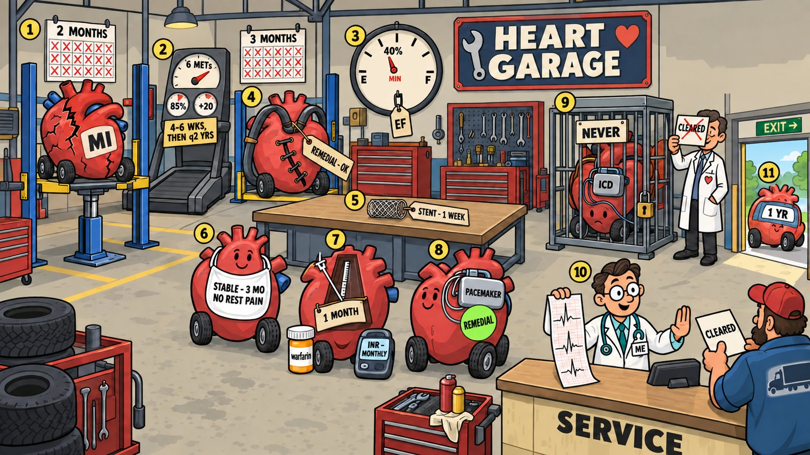

Card 5 of 13 · 49 CFR 391.41(b)(4)
The Heart Garage
Coronary disease — MI, the exercise test, ejection fraction, bypass, stents, angina, arrhythmias, pacemakers and ICDs.

0:00 / 0:00
Press play — the narrator walks the scene and the spotlight follows to each numbered object. Click any paragraph to jump there. Space play/pause · ←/→ previous/next object · [/] previous/next card.
Not started — press play, then try the questions.
What this card covers
Coronary disease — MI, the exercise test, ejection fraction, bypass, stents, angina, arrhythmias, pacemakers and ICDs. Standard: 49 CFR 391.41(b)(4).
The hooks to keep
- Two months for MI
- 6 METs, 85%, +20 on the treadmill
- 40% minimum in the tank
- Three months for bypass, one week for a stent
- ICDs never leave the cage
- Doc reads the strip, not the letter
Test yourself
9 questions on this card
Answer each question to see the explanation, its sources, and the cheat-sheet entry.